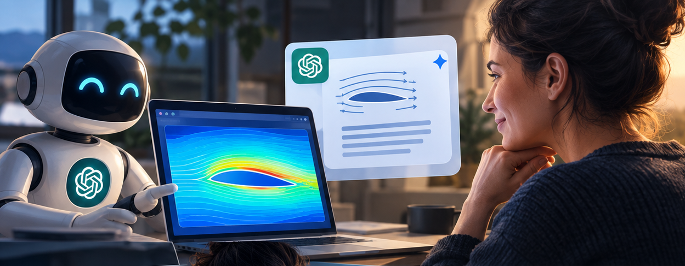

Oktober 2026
Die Schnittstelle | Technologie, Institutionen, Gesellschaft
Die Simulation lief perfekt. Das war das erste Warnsignal.

Ich bat eine KI, mir beim Schreiben einer numerischen Simulation zu helfen, und sie tat es schnell. Ich überprüfte die Gleichungen, die sie implementiert hatte, und das war eine gute Idee, denn die Gleichungen waren falsch. Und natürlich waren damit auch einige der daraus resultierenden Berechnungen falsch.
Die Ergebnisse sahen schön und plausibel aus, aber für ein geschultes Auge (und mit geschultem Auge meine ich jemanden, der Fluiddynamik gelernt hat, als die KI noch nicht da war, um zu helfen) war die Strömung um das Profil zu perfekt.
Alles bewegte sich zu gut und es kam an irgendeinem zufälligen Punkt stromabwärts zu keinem Fehler. Zu schön, um wahr zu sein. Also ging ich verärgert zurück zur KI, beleidigte sie und liess sie alles noch einmal überprüfen, viermal, mit meinen Eingabedaten, bis ich sicher war, dass sie die Realität an keiner Stelle verbog.
Dann kam der Moment, in dem ich die Ergebnisse für einen wissenschaftlichen Artikel beschreiben musste. Die KI schlug eine physikalische Interpretation vor: fliessend, selbstsicher, grammatikalisch einwandfrei … und falsch! Ich musste ihr widersprechen, erklären warum und warten, bis sie die Antwort immer wieder überarbeitete. Ich überprüfte alles mit Kollegen, mit der veröffentlichten Literatur und mit meinem eigenen kritischen Denken, bis ich zu einer Erklärung kam, von der ich überzeugt bin.
Codefehler zeigen sich normalerweise durch Abstürze oder absurde Zahlen. Manchmal sehen sie aber vollkommen plausibel aus, bis ein menschlicher Verstand bemerkt, dass etwas nicht stimmt. Eine falsche Interpretation von Zahlen, die vernünftig aussehen, ist noch leiser und kann in einen Bericht oder eine Entscheidung einfliessen.
Ich lasse die Details weg, weil ich nicht möchte, dass dieser Beitrag nur für Raumfahrtingenieure verständlich ist. Ich erzähle diese Geschichte, weil ich immer mehr junge Kollegen sehe, die KI zum Schreiben von Code verwenden (was völlig in Ordnung ist, wenn man weiss, wie man überprüft, was sie tut) und um Ergebnisse zu erklären … und letzteres macht mir mehr Sorgen. Meiner Erfahrung nach kommt die KI mit Mustern viel besser zurecht als mit Physik, und sie ist nicht immer gut darin, aus Daten etwas abzuleiten oder zu schlussfolgern. Ich selbst nutze KI sehr viel: Sie ist schnell beim Debuggen und hilft mir, wenn ich eine Codezeile oder die Vergangenheitsform eines deutschen Verbs vergessen habe, aber sie kann nicht den denkenden Teil unserer Arbeit übernehmen.
Wenn ich einen einzigen Kurs in die Ingenieurstudiengänge aufnehmen könnte (und nicht nur in die Ingenieurwissenschaften), wäre es: Wie leicht wir uns dazu bringen lassen zu glauben, dass die KI für uns denken kann (und was wir dagegen tun können).
Wenn du KI bei der Arbeit verwendest, hast du ähnliche Erfahrungen gemacht? Verbringst du viel Zeit damit, Fehler der KI zu erkennen, oder vertraust du ihr einfach?
Mit KI erstelltes Bild. Der Strömungsverlauf um das Profil ist natürlich nicht vertrauenswürdig! 😄
Die Schnittstelle | Technologie, Institutionen, Gesellschaft
#InterfaceTechInstitutionsSociety #AILiteracy #CriticalThinking